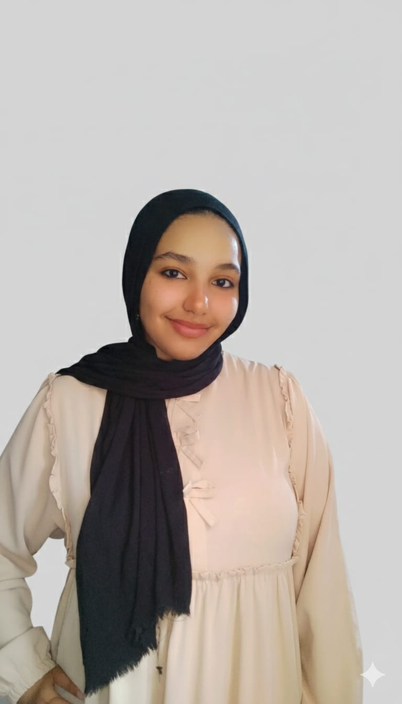

01
Digital Clock Hardware Project
Led the team and implemented the practical hardware component of a digital clock using Logic Gates.
I’m Malak Fayez, a Computer Science & AI student focused on data science, machine learning, systems analysis, and practical problem-solving.

I enjoy turning real-world problems into structured systems and useful insights. I learn quickly, work well under pressure, and stay solution-oriented when plans change.
My experience includes data cleaning, exploratory data analysis, visualization, model evaluation, Java development, systems analysis, and digital hardware projects. I have completed 5 applied projects and currently continue developing my technical, soft-skill, and freelancing abilities through DEPI.
Academic and training projects across hardware, software, systems analysis, machine learning, and data analysis.
Led the team and implemented the practical hardware component of a digital clock using Logic Gates.
Proposed and analyzed an electronic health-unit system to replace paper workflows. Documented the full SDLC from planning through maintenance.
Contributed to a classification system predicting whether an employee should be recommended for a new job opportunity.
Analyzed telecom customer data to study churn behavior and identify whether customers were likely to leave or continue with the company.
Developed a Java-based system for managing hospital reception operations.
Deepening technical data science and machine learning skills alongside soft skills and freelancing training.
Intensive AI training with practical machine learning and model development work.
Practical data science training completed during the mid-year academic break.
Python · Pandas · NumPy · Scikit-learn · Streamlit · Matplotlib · Seaborn · EDA · Model Evaluation
C++ · Java · Git · GitHub · Logic Gates · DFD · ERD · SDLC
Teamwork · Leadership · Fast Learning · Adaptability · Problem Solving · Time Management · Working Under Pressure
Open to learning opportunities, collaborative projects, and entry-level experiences in data science, AI, and software development.